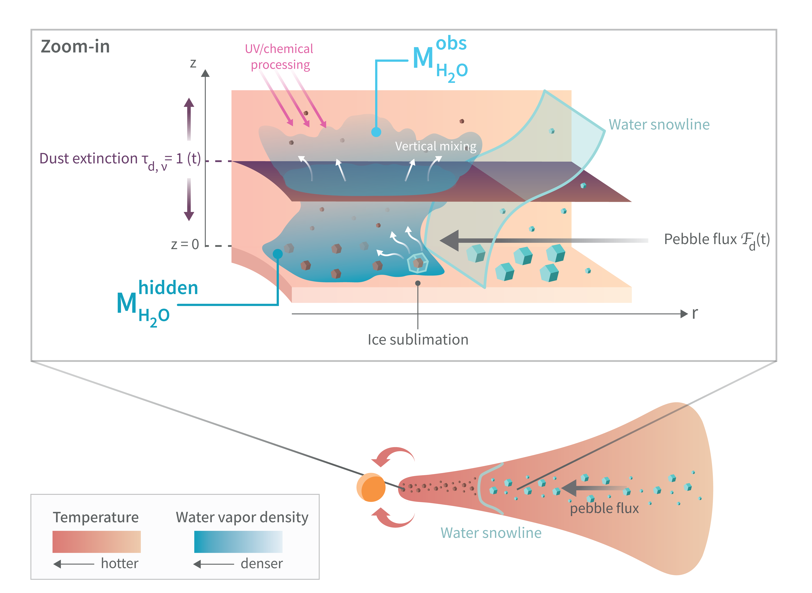

Context
Based on spectra obtained with JWST, several works (e.g., Banzatti+2023) have attempted to connect the observed reservoir of water vapor MH2O, obs (in the disc upper layers) to the efficiency of pebble transport Fpeb (in the disc midplane).
However, it is not clear how these quantities connect, and how much water vapor is hidden underneath the optically thick dust.
What's been done
We performed 1D simulations to follow the transport of dust and volatiles using the code chemcomp. We introduced a new 1+1D (r, z) approach allowing us to derive the 2D distribution of dust and water vapor.
With these tools, we were able to measure how much water vapor is observable vs. hidden in comparison to the dust optically thick surface, and how it evolves through the disc lifetime. We also tested how it differs for different dust models, i.e., if the fragmentation velocity changes at the water iceline.

Our paper in three key results
(1) The amount of water vapor that is observable by JWST is orders of magnitude smaller than the hidden water vapor reservoir (typically 10-3 to 10-5).
(2) If there is a traffic-jam effect inside the water iceline (e.g., caused by a decrease in vfrag, or pebbles falling apart as discussed in Houge & Krijt 2023), the observable water vapor mass is constant in time , even though the intense pebble flux delivers several Earth masses of pure water vapor. Water vapor is effectively smuggled unnoticed.
(3) For efficient radial drift without traffic-jam, the observational water vapor reservoir can become proportional to the instantaneous pebble flux through the water iceline. This can allow observers to connect their vapor measurements to the efficiency of volatile transport in the disc.